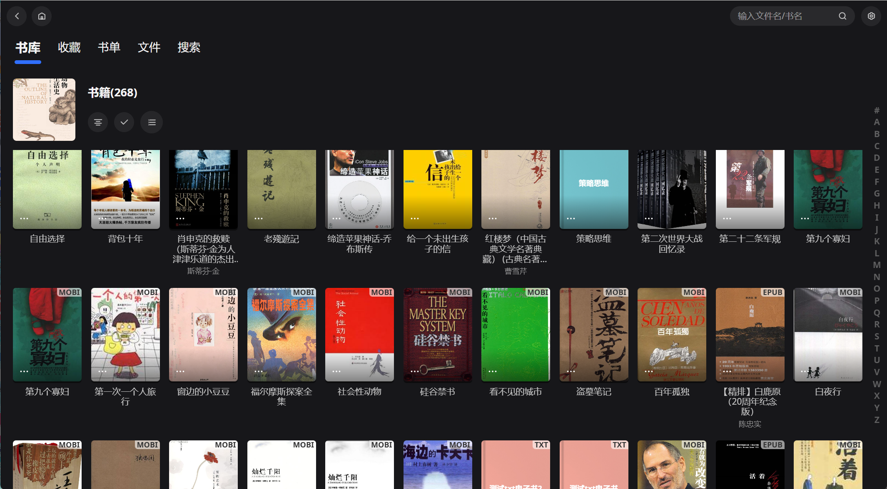

NasCab 深度盘点：从照片 EXIF 到远程访问，这个 NAS 盒子能装下多少生活数据
系统性梳理 NasCab 的四大核心能力域——照片库自动识别、音乐 ID3 智能分类、图书书单联动 Calibre、外网专属域名访问，每一块都做到了什么程度，又有哪些不能不说的局限。
如果把家里的 NAS 比作一个数字储物柜，NasCab 就是那个给储物柜装了「智能分区系统」的家伙。不是简单地把文件堆进去，而是自动帮你按类型归好档、按标签分好类、按时间排好序，甚至出门在外还能伸手进去拿东西。这套东西到底能做到什么程度，它的官网上功能列表写得洋洋洒洒，值得花时间认真盘一遍。
照片库：不只是看图，是读 EXIF 的全维度索引
NasCab 扫描照片时做的第一件事不是生成缩略图，而是把每张照片的 EXIF 元数据扒出来——拍摄时间、相机型号、镜头参数、光圈快门、GPS 坐标，一个都不落地。时间轴视图靠拍摄时间排序，地图视图靠 GPS 坐标打点，人脸识别靠 EXIF 里的缩略图做初筛。
这意味着如果你相机默认关了 GPS，那些照片在地图视图里就永远缺席；如果相机日期设置错了，整个时间轴会乱序。任何一个字段缺失都会影响对应功能，这是 NasCab 照片库的一个前提。定期用 ExifTool 做一次 EXIF 健康检查，对摄影爱好者来说是个好习惯，扫完 NasCab 会自动重新索引。
亮点在于它不是单张看 EXIF 的工具——而是把整库照片的 EXIF 变成了可搜索、可分组的索引。想找去年冬天用 Sony A7R 拍的所有夜景？按相机型号 + 时间范围 + 光圈条件筛选，几秒就出结果。具体的筛选参数和高级玩法，NasCab文档上有完整说明。
音乐曲库：ID3 标签质量直接决定浏览体验
NasCab 读音乐的逻辑和 iTunes 很像——靠 ID3 标签（MP3）或 Vorbis Comment（FLAC/OGG）里的艺术家、专辑、流派、封面图来组织整个曲库。标签完整的话，自动按艺术家 / 专辑 / 年份完美分组，有封面有简介，体验和 Apple Music 的本地库几乎一样。
但早年下载的中文 MP3 常踩坑：GBK 编码的 ID3v1 标签会让歌曲全部堆在「未知艺术家」里，显示乱码文件名。推荐的修法是用 foobar2000 或 MusicBrainz Picard 批量转成 UTF-8 编码的 ID3v2.4，转完 NasCab 重新扫描就好。
封面图也是自动提取的——只要是内嵌在音频文件里的封面，不管是 Vorbis Comment 的 METADATA_BLOCK_PICTURE 还是 ID3 APIC 帧，都能被正确解析显示。在 iTunes 里整理好的音乐，直接把 iTunes 媒体目录添加到来源文件夹，全部分类结构自动继承，不用重新整理。
图书漫画库：三种视图 + Calibre 联动
NasCab 的书单功能本质上是自定义分组——可以按想读完的、最喜欢的、某个主题的、送给朋友推荐的任意维度组织，一本书同时出现在多个书单里也不影响原位置。每本书右上角的心形收藏按钮，点一下自动进「我的收藏」书单。
三种浏览模式覆盖了不同使用习惯：书单视图看自己建的分组，文件夹视图按来源目录物理结构浏览（Calibre 用户会很熟悉），标签视图自动识别书里的标签元数据。如果你已经在 Calibre 里整理好了书库，把 Calibre 的书库目录整体作为图书来源文件夹，Calibre 的标签和分类能被 NasCab 自动继承，省去重复劳动。

对漫画读者还有额外福利——comic-reader 支持常见漫画格式，翻页流畅，这一块是同类工具里少有的「漫画友好」设计。
远程访问：专属域名打通内外网
这是 NasCab 最「出圈」的能力——安装包从官方下载拿就行。开通专属域名后（白金版），手机在外网也能访问家里的 NAS，Android / iOS / 鸿蒙 App 都支持，任何浏览器直接输域名登录也行，界面和电脑端网页完全一样。
扫码添加服务器最快——服务端网页首页右上角有二维码，App 扫一下自动填好域名，只需输密码。外网访问和局域网访问的主要差异：速度取决于家里宽带上行带宽和中继、HTTPS + AES 加密、视频自动按外网带宽转码。常见瓶颈基本都在上行带宽，深夜没人用网时体验会好很多。
短板也要说
盘点了好处，局限也得客观提几句。
首先是白金版门槛——专属域名和外网访问是付费功能，免费版只能局域网用。其次是数据完整性依赖：照片没有 GPS 就进不了地图视图，音乐标签残缺就乱堆，图书没有元数据就只能按文件名排序。NasCab 做的是「索引」而不是「补全」，源数据质量差的时候体验会打折。
再者，外网访问的连接稳定性受运营商影响大，有些家庭宽带的动态 IP + CGNAT 环境下可能需要额外折腾端口映射或中继优化。iOS 客户端偶发「网络请求失败」的反馈也存在，通常升级版本 + 重新登录能解决。
什么样的人该用它
三类人值得关注。
第一类是已经有 NAS 但还在用原生文件管理器的用户。 原生管理器就是堆文件夹，找一张照片要翻好几个目录；NasCab 用 EXIF 和元数据把整个媒体库变成可搜索、可筛选的数据库，这个体验提升是质的变化。
第二类是 Calibre 用户 + 音乐爱好者的组合。 已经在 Calibre 整理好的书库可以直接接入，音乐曲库的自动分类又和 iTunes/Apple Music 的工作流无缝衔接，相当于把两个软件的成果合并成一个统一入口。
第三类是经常出门需要远程取资料的人。 专属域名 + App 连接 + 浏览器兜底，三种方式总有一种能用，视频转码自动适配带宽，比自己搭 frp 或者用路由器自带的 DDNS 省心得多。
总的来说，NasCab 不是那种开箱即用的「一键神器」——它的好体验建立在源数据质量之上。但如果你愿意花半天时间把照片 EXIF、音乐标签、图书元数据整理一遍，回报是一个能真正替代文件管理器的智能媒体中心，而不只是一个存东西的盒子。这份内容在三个仓库都能同步到，Gitee 和 GitCode 对国内网络更友好，GitHub 上更新频率最高。